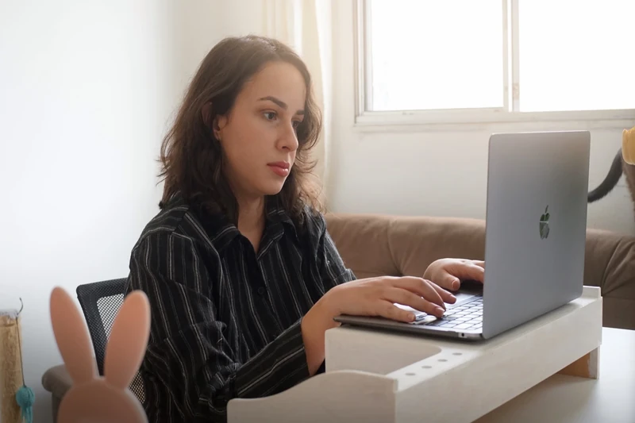

Quando tudo
pesa, ter apoio
muda tudo.
Muita gente chega aqui sem saber exatamente o que sente — só sabe que algo não tá certo. Esse já é um bom ponto de partida.
Isso soa familiar?
Às vezes é difícil colocar em palavras o que a gente tá sentindo. Veja se algum desses momentos ressoa com você.
Sobrecarga que não passa
Você tá dando conta de tudo, mas parece que nada tá bom o suficiente. O trabalho toma espaço que não é dele — nos fins de semana, na cama, na sua cabeça.
Aquela sensação constante de alerta
Coração acelerado sem motivo claro. Pensamento que não para. Dificuldade de curtir o presente porque você já tá preocupada com o próximo problema.
Piloto automático ligado
Às vezes você olha pra vida e pensa: "mas é isso?" Tomar decisões que fazem sentido pra você, e não só pros outros, é mais difícil do que parece.
Vida que não para em um lugar só
Você mora fora, trabalha remoto ou vive de cidade em cidade — e a terapia presencial nunca encaixa na sua rotina. O atendimento online foi feito pra quem, como você, não pode (ou não quer) se prender a um consultório fixo.
A base do nosso trabalho juntos
Minha prática é fundamentada na Análise do Comportamento — com especializações em ACT e DBT. Cada abordagem foi escolhida porque funciona: são científicas, práticas e feitas para a vida real.
Análise do Comportamento
Applied Behavior Analysis · Base da minha formação
A AC parte de uma premissa simples: o comportamento humano não surge do nada. Ele é moldado pelas experiências, pelo ambiente e pelas relações ao longo da vida. Entender esse contexto é o ponto de partida para qualquer mudança real.
Em vez de tratar sintomas isolados, a AC investiga o que vem antes de um comportamento (o que o dispara) e o que vem depois (o que o mantém). Esse mapa é o que nos permite trabalhar de forma eficaz — e duradoura.
É uma abordagem científica e baseada em evidências, mas que se traduz em conversas profundas e ferramentas práticas para o dia a dia. Sem rótulos desnecessários, sem respostas prontas.
- 🔁 Pessoas que se veem repetindo os mesmos padrões — em relacionamentos, no trabalho ou consigo mesmas — e não entendem por quê.
- 😤 Quem sofre com ansiedade, estresse crônico ou sensação constante de estar no limite, sem conseguir identificar a origem.
- 🧩 Pessoas que buscam autoconhecimento real — não só entender o que sentem, mas entender por que agem como agem.
- 🌱 Adolescentes e adultos que estão passando por mudanças importantes e precisam de um processo estruturado para navegar esse período.
- 🌍 Nômades, viajantes e profissionais remotos que precisam de um suporte que não dependa de um lugar fixo.
Não sabe ao certo qual abordagem faz mais sentido pra você? Não precisa saber. Esse é um dos primeiros assuntos que conversamos juntos.
Vamos conversar?Terapia de Aceitação e Compromisso
Acceptance and Commitment Therapy · Especialização
A ACT parte de uma ideia que parece contraintuitiva: tentar eliminar pensamentos difíceis muitas vezes os torna mais intensos. Em vez de lutar contra o que você sente, a ACT te ajuda a mudar a relação que você tem com os seus pensamentos e emoções.
O foco não é sentir menos — é agir com mais liberdade, mesmo quando algo pesa. A ACT te ensina a identificar o que realmente importa pra você (seus valores) e a tomar decisões a partir disso, em vez de deixar o medo ou a ansiedade decidirem por você.
É uma das abordagens mais bem documentadas para ansiedade, burnout e questões de sentido. Funciona muito bem em formato online.
- 😰 Pessoas com ansiedade intensa que já tentaram "pensar positivo" ou "parar de se preocupar" — e perceberam que isso não funciona sozinho.
- 🔥 Quem está em burnout ou sente que perdeu o sentido no trabalho, nos relacionamentos ou na vida de forma geral.
- 🚫 Pessoas que se sentem paralisadas pelo medo de errar, de decepcionar ou de não ser suficiente — e deixam de viver por causa disso.
- 🧭 Quem está num momento de transição (mudança de carreira, fim de relacionamento, mudança de país) e precisa de clareza sobre o que realmente quer.
- 💻 Profissionais remotos e nômades digitais que lidam com isolamento, falta de estrutura e dificuldade de separar vida profissional de pessoal.
Não sabe ao certo qual abordagem faz mais sentido pra você? Não precisa saber. Esse é um dos primeiros assuntos que conversamos juntos.
Vamos conversar?Terapia Comportamental Dialética
Dialectical Behavior Therapy · Especialização
A DBT foi desenvolvida para pessoas que sentem as emoções de forma muito intensa — aquelas que frequentemente são descritas como "sensíveis demais" ou que têm dificuldade de controlar reações em momentos de estresse.
O nome "dialética" vem de uma ideia central: aceitar quem você é agora enquanto trabalha para mudar o que não tá funcionando. Não é uma coisa ou outra — é as duas ao mesmo tempo.
A DBT é estruturada em quatro módulos de habilidades práticas: regulação emocional, tolerância ao mal-estar, efetividade interpessoal e mindfulness. Cada habilidade pode ser treinada e aplicada na vida real.
- 🌊 Pessoas que sentem emoções muito intensas — raiva, tristeza, vergonha — e que têm dificuldade de regular essas emoções antes de agir ou reagir.
- 💢 Quem tem conflitos frequentes em relacionamentos, muitas vezes por dificuldade de comunicar o que sente sem explodir ou se fechar.
- 🌀 Pessoas que oscilam muito entre estados emocionais — dias ótimos e dias de colapso — e sentem que não têm controle sobre esse ciclo.
- 🛑 Quem recorre a comportamentos que aliviam no curto prazo (isolamento, impulsividade, evitação) mas que pioram o quadro geral ao longo do tempo.
- 🤝 Pessoas que querem melhorar a qualidade dos seus relacionamentos — aprender a pedir o que precisam, estabelecer limites e se comunicar com mais clareza.
Não sabe ao certo qual abordagem faz mais sentido pra você? Não precisa saber. Esse é um dos primeiros assuntos que conversamos juntos.
Vamos conversar?
O ProcessoComo é a terapia comigo?
Cada processo terapêutico é construído de forma personalizada. Trabalho com escuta ativa e técnicas da Análise do Comportamento (AC), uma abordagem baseada em evidências.
A ideia não é te dar respostas prontas — é te ajudar a encontrar as suas.
Seg, Ter, Qua e Sex · 08h30 às 17h00
Não importa onde você tá
Pode ser num apartamento em Lisboa, num hostel em Floripa ou no quarto da sua mãe entre uma viagem e outra. O atendimento online acontece por videochamada com o mesmo cuidado de uma sessão presencial.
Atendo nômades digitais e mochileiros.
Você não precisa interromper o processo terapêutico cada vez que muda de endereço. A sessão vem com você — e atendo brasileiros no exterior.
Um espaço acolhedor em VCA
Para quem está em Vitória da Conquista, o atendimento presencial acontece num espaço reservado e confortável, pensado para que você se sinta à vontade desde o primeiro momento.
AC — Análise do Comportamento
A Análise do Comportamento estuda como o ambiente, as experiências e as relações moldam o jeito que a gente age, sente e pensa. Em vez de focar só nos sintomas, a AC busca entender o que está por trás dos comportamentos — e o que pode ser mudado. É uma abordagem científica, prática e profundamente humana.
Oi, eu sou a Letícia
Sou psicóloga (CRP 03/21534) com formação em Análise do Comportamento (AC) e especialização em ACT e DBT. Atendo adolescentes e adultos, de forma online — pra todo o Brasil — e presencial em Vitória da Conquista, BA.
Sempre me interessei por pessoas que vivem fora do padrão. Mochileiros, nômades digitais, profissionais remotos — gente que escolheu uma vida diferente e precisa de um suporte que acompanhe esse ritmo. Entendo que "marcar consulta toda semana no mesmo lugar" não é uma realidade pra todo mundo, e tá tudo bem.
Entende como o ambiente, as experiências e as relações moldam o jeito que a gente age, sente e pensa. Em vez de focar só nos sintomas, busca o que está por trás dos comportamentos — e o que pode ser mudado de forma prática e científica.
Trabalha a relação que você tem com seus próprios pensamentos e emoções. Em vez de tentar eliminar o que é difícil, a ACT te ajuda a aceitar o que não pode ser controlado e agir com base no que realmente importa pra você — seus valores.
Desenvolvida para quem sente as emoções de forma muito intensa, a DBT ensina habilidades práticas para regular emoções, tolerar momentos difíceis, melhorar relacionamentos e encontrar equilíbrio entre aceitação e mudança.
O que você vai encontrar aqui é um espaço de escuta de verdade. Sem julgamento sobre suas escolhas, sem pressa, e sem aquela sensação de que você precisa se encaixar num modelo que não é seu.
Vamos conversar?